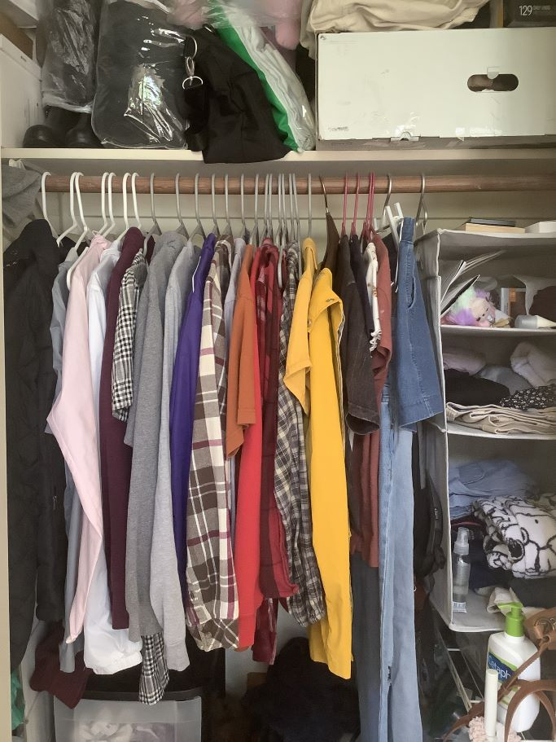

Jean's Learning Journal
Game Design UX Best Practices
Tue. May 18, 2021
I read Amri Domri's article on UX Game Design. I think his experience and background is impressive, maybe even a little scary considering the amount of user data he had access to and his acknowledgement that he liked affecting the human brain. Reading the tip about placing ads on the bottom where it is easiest to click was something that frustrated me considering that is one of my pet peeves as a user in mobile games. I understand that it is beneficial for the app, and it works for their objective, but personally I think it is annoying. Another takeaway is I did not realize how beneficial sliders and pop ups are until reading this article. Overall, it was interesting seeing a list of all the similarities in every mobile game I have played compiled into an article that explains why the design is how it is for these applications.
Visual Thinking Analysis Part One and Two
Thu. May 6, 2021
This image is interesting to me because it features an object that I enjoy. It is a venus fly trap that was a gift this past Christmas.
It has grown really well, and needs to be transferred out of its vial. I enjoy looking at it and having it by my window.
For other people, it might just be a plant, but for me it holds many memories. The last time I had a venus fly trap
was over 10 years ago and it did not survive the summer heat one day. This image makes me remember that first plant. It relates to my archive studio project, because it is
a gift from my ex-boyfriend which is what my archive will be about. It is one of the objects I still have that hold memories of us.
The collection tells a story about my first relationship, and I think it will be bittersweet. Hopefully it is relatable to see the small remnants of someone else in your everyday life, especially
if that person is not as present in your life as they once were.
 Jean Pagaduan, 2021
Jean Pagaduan, 2021
Jessica's image shows a closet. I am assuming it is hers. The most interesting aspects are the variety of textures and patterns present. There is a lot going on and it is a busy image.
There are also items above the clothes which might be significant as well. Overall, what stands out to me the most are the clothes hanging in the closet as they take
up the most space in the image.There is a pattern made by the clothes themselves in their repetition in the closet. They are aligned in lines creating a sense of
movement downwards. This image contains a lot of lines and geometric box shapes. Besides the linear movement of the clothes on the hangers, the boxes on the side and top add to the geometry of the picture.
The most obvious parts are that this is a closet and there are clothes present. Overall, there is a sense of mystery in that no object is fully shown. Although clothes are implied, they are not laid out.

Jessica Lo, 2021
Visual Thinking:Sssolitaire
Thu. April 29, 2021
I saw Sssolitaire on the Awwards.com
website. I loved the images they included with the different hearts, diamonds, spades, and clubs that you could
creat by clicking. I liked that if you added enough of those, it dropped downwards and the card image animated into a new
one.I liked that the cursor had the instructions on how to interact with the page. When hovering over links,
a scribble over the words is created. Small details like that made the website better. In contrast to the circling
over links, the dark mode link would be scribbled out if hovered over, reflecting the mode and point of the button. The visuals and
fonts work together very well. Their about page scrolls horizontally and reveals more details in pictures as you scroll.
I found that to be very appealing.
Best Practices For Modals/Overlays/Dialog Windows
Wed. April 21, 2021
I chose to read the article, "Best Practices For Modals/Overlays/Dialog Windows," written
by Naema Baskanderi. The first thing I noticed was that I was not familiar with
what modals are. This helped clarify that for me clearly by providing a definition.
I think my experience
with modals have been when I have clicked a page with lots of annoying advertisements advertisements
and higher risks of viruses. Other
times that I remember modals are with online
newspapers that stop me from accessing the full page without subscription
or wthout my AdBlock turned off. I think it is interesting that Baskanderi notes that it should
not be used ot show warning messages. I find this ironic since a lot of spam use it
to show a false warning message. As I read more of the article, I realized that overlays are very common
since a lot of log ins use overlays as well. I think her notes about the downsides of modals are
very relatable from a user point of view. They definitely do interrupt the user experience. I think overlays and modals serve more purpose
to the people who own the website rather than the users themselves, since the people who made the
website are assuming what the user should interact with. For example, I don't have a Twitter yet I like
sometimes view Twitter profiles. I eventually get stopped from doing so by Twitter's overlays. This benefits
Twitter more than it benefits me as a user, because it encourages me to create an account.
Best practices for form design
Wed. April 14, 2021
Reading Ansari's article, "Best Practices for Form Design" taught me
20 tips. I know from my own form-filling experience that
keeping the form short is best as I am impatient, and I think others
can relate. I found that many of Ansari's suggestions align with
my own preferences. Overall, there is a lot of emphasis on keeping
the form as simple as possible and letting the user know about their
progress.
Something I did not realized but learned by reading this article was
Ansari's 4th tip. Although it
is common, I never really thought about how forms usually ask the easiest questions
first and keep the complicated questions for later. This is a technique
that's used in every form I have ever filled. They start by asking your
name. However, I never realized it was to keep you invested and motivated
in filling the form out. Also, distinguishing between optional and required
fields is important and something I have observed. However, I would
not have remembered or come up with it on my own without reading about it.
I fill out a Daily Symptom Survey every day as a result of living on campus
during the pandemic. Since it is fairly short, it does not show
a progress bar and all the questions are on one page. The form
is simple by having mostly yes or no options. It exemplifies the "less is more"
concept. It uses one column.